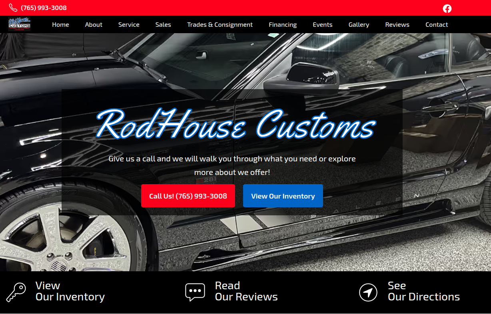

Richmond Classic cars
The owners of Rod House Customs are passionate about classic cars and helping enthusiasts find their dream vehicles. They offered buy/sell/trade services and consignment options, but they didn't have a website to sell their cars and show off their work. I built them a new website from the ground up to manage their inventory, designed to convert visitors into customers, and equipped with analytics to understand how many people are looking at each car.

Rod House Customs had no online platform to showcase their inventory or reach potential buyers beyond word-of-mouth. Without a website, they were missing out on serious car enthusiasts searching online for classic vehicles and custom restoration work.
I built a custom website with an inventory management system that makes it easy to add, update, and showcase each vehicle with detailed photos and specs. The site was designed with conversion in mind with clear calls-to-action, mobile optimization, and an intuitive browsing experience that turns visitors into leads.
Rod House Customs now has a 24/7 digital showroom that attracts qualified buyers and showcases their restoration expertise. The built-in analytics give them real-time insights into which vehicles are getting the most attention, helping them make smarter inventory and marketing decisions.